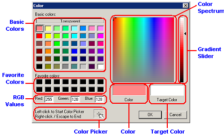
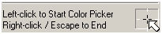
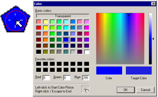
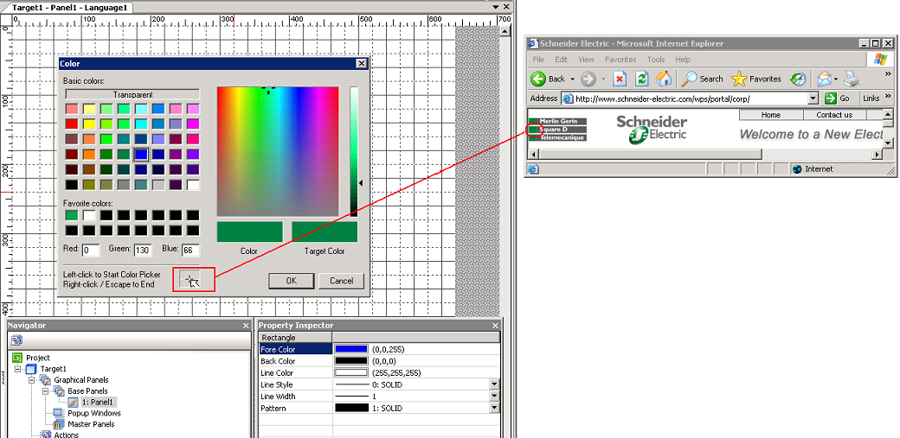
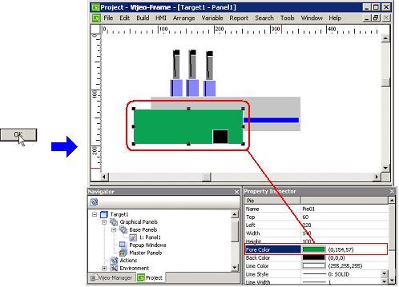
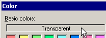

|
|
|
|
|
|
|
|

Color Spectrum: Displays the available colors in a continuous range.
Gradient Slider:Changes a color's luminescence.
Basic Colors: Commonly used colors: Red, Black, Blue, White, Purple, etc.
Favorite Colors: Displays a selection of the colors that you most commonly use.
RGB Values: Each of the RGB components can use a value ranging from 0 (black) to 255 (white). For example, a bright red color might have values of R 246, G 20, and B 50; the color black will have values of R 0, G 0, and B 0; and the color white will have values of R 255, G 255, and B 255.
Color Picker: Enables you to copy colors within Vijeo-Designer and colors outside the program.
Color: Displays the color that is currently selected.
Target Color: Displays the color that displays on the target machine.
Display the Color Palette.
Specify a color by selecting the color from basic colors, color spectrum, or by typing in the color's RGB values.
Select OK to initialize the new color.
You can copy colors within Vijeo-Designer and colors outside the program.
Open the Color Palette by clicking the color property (Fore Color, Back Color, Line Color, Text Color, or 3D Color) that you want to display.
In the Color Palette, click the Color Picker.

Place the Color Picker above an object whose color you want to copy, and click the color to copy it. Right-clicking cancels the new color and restores the original color.

Click OK to initialize the new color.
On your desktop, display both the Vijeo-Designer editor window and the application that contains the color you want to copy.
In Vijeo-Designer editor, display the Color Palette.
Click and then hold down the Color Picker while dragging it outside the editor and onto the application that contains the color you want to copy.

Release the Color Picker.
The cursor is now hovering over the OK button in the Vijeo-Designer Color palette.
Click OK on the color palette to save the new color and apply it to the selected object.

Display the object's Color Palette.
Select Transparent in the Basic Colors area.

Select OK to initialize the new color setting.